Chapter 3 described how to build a circuit using physical layout diagrams to represent the breadboard and components mounted on it. Although such physical layout diagrams may seem like the easiest way to diagram a circuit, you’ll find that as more components are added, direct representations can make physical diagrams a real mess. Because our circuits are about to get more complicated, we’ll start using schematic diagrams (also known as circuit diagrams) to illustrate them, such as the one shown in Figure 4-1.
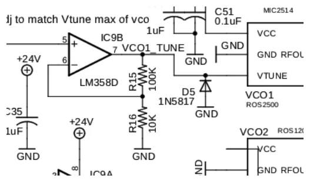
Schematics are simply circuit “road maps” that show the path of electrical current flowing through various components. Instead of showing components and wires, a schematic uses symbols and lines.
Identifying Components
Once you know what the symbols mean, reading a schematic is easy. To begin, let’s examine the symbols for the components we’ve already used.
The Arduino
Figure 4-2 shows a symbol for the Arduino itself. As you can see, all of the Arduino’s connections are displayed and neatly labeled.
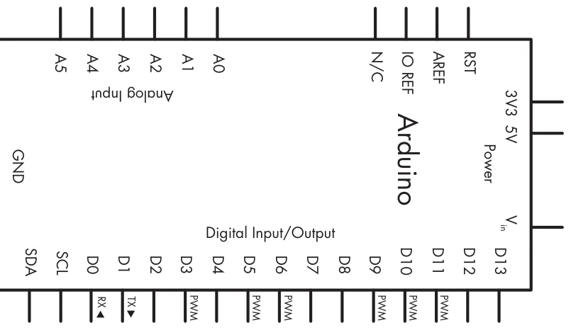
The Resistor
The resistor symbol is shown in Figure 4-3.R1
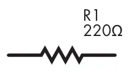
It’s good practice to display the resistor value and part designator along with the resistor symbol (220 Ω and R1 in this case). This makes life a lot easier for everyone trying to make sense of the schematic (including you). Often you may see ohms written as R instead—for example, 220 R.
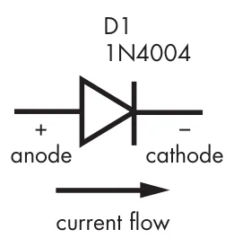
The Rectifier Diode
The rectifier diode is shown in Figure 4-4.
Recall from Chapter 3 that rectifier diodes are polarized, and current flows from the anode to the cathode. On the symbol shown in Figure 4-4, the anode is on the left and the cathode is on the right. An easy way to remember this is to think of current flowing toward the point of the triangle only. Current cannot flow the other way, because the vertical bar “stops” it.
The LEDLED1
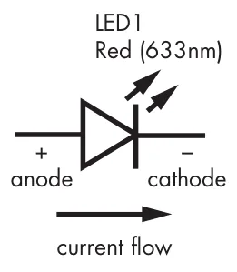
The LED symbol is shown in Figure 4-5.
All members of the diode family share a common symbol: the triangle and vertical line. However, LED symbols show two parallel arrows pointing away from the triangle to indicate that light is being emitted.
The Transistor
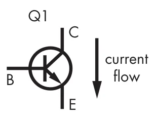
The transistor symbol is shown in Figure 4-6. We’ll use this to represent our BC548.
The vertical line at the top of the symbol (labeled C) represents the collector, the horizontal line at the left represents the base (labeled B), and the bottom line represents the emitter (labeled E). The arrow inside the symbol, pointing down and to the right, tells us that this is an NPN-type transistor, because NPN transistors allow current to flow from the collector to the emitter. (PNP-type transistors allow current to flow from the emitter to collector.)
When numbering transistors, we use the letter Q, just as we use R to number resistors.
The Relay
The relay symbol is shown in Figure 4-7.NO NC
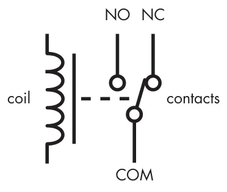
Relay symbols can vary in many ways and may have more than one set of contacts, but all relay symbols share certain elements in common. The first is the coil, which is the curvy vertical line at the left. The second element is the relay contacts. The COM (for common) contact is often used as an input, and the contacts marked NO (normally open) and NC (normally closed) are often used as outputs.
The relay symbol is always shown with the relay in the off state and the coil not energized—that is, with the COM and NC pins connected. When the relay coil is energized, the COM and NO pins will be connected in the symbol.
Wires in Schematics
When wires cross or connect in schematics, they are drawn in particular ways, as shown in the following examples.
Crossing but Not Connected Wires
When two wires cross but are not connected, the crossing can be represented in one of two ways, as shown in Figure 4-8. There is no one right way; it’s a matter of preference.
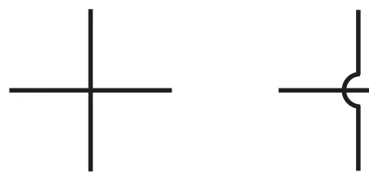
Connected Wires
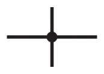
When wires are meant to be physically connected, a junction dot is drawn at the point of connection, as shown in Figure 4-9.
Wire Connected to Ground
When a wire is connected back to ground (GND), the standard method is to use the symbol shown in Figure 4-10.
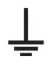
The GND symbol at the end of a line in a schematic tells you that the wire is physically connected to the Arduino GND pin.
Dissecting a Schematic
Now that you know the symbols for various components and their connections, let’s dissect the schematic we would draw for Project 1. Recall that you made five LEDs blink backward and forward.
Compare the schematic shown in Figure 4-11 with Figure 3-13 on page 45, and you’ll probably agree that using a schematic is a much easier way to describe a circuit.
From now on, we’ll use schematics to describe circuits, and we’ll show the symbols for new components as they’re introduced.
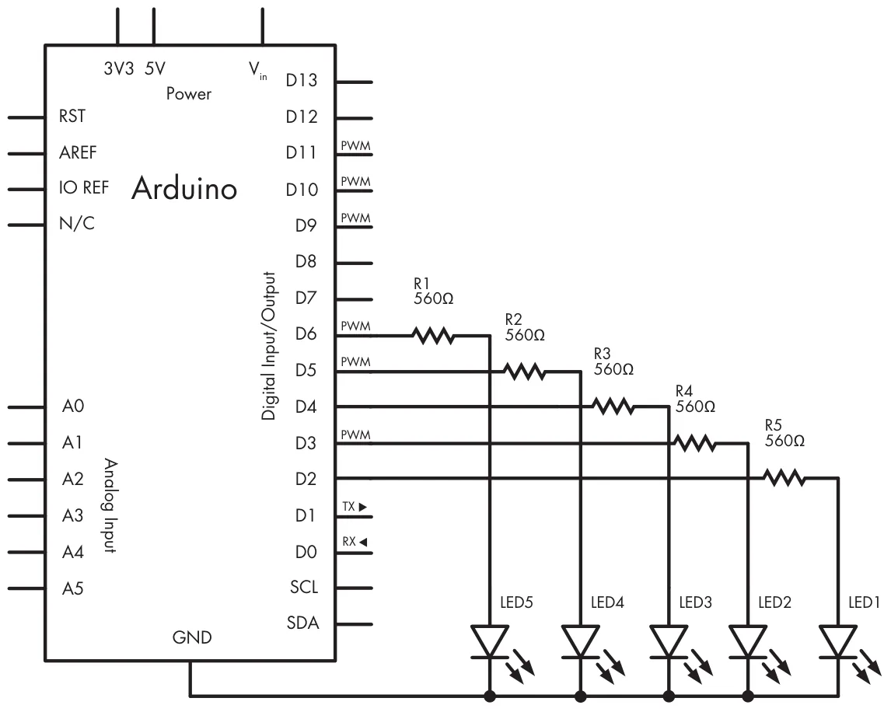